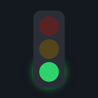
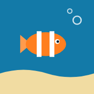
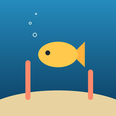
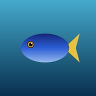

Klassen-Tools
Öffne ein Tool und lege es auf dem iPad über „Teilen“ › „Zum Home-Bildschirm“ ab.

LärmampelAmpel, die zeigt, wie laut es in der Klasse ist.

Lärmampel KorallenriffJe länger es leise ist, desto mehr Fische schwimmen ins Riff.

FlüsterriffRuhiges Aquarium, das bei Lärm reagiert.

Flüsterriff realistischDas Flüsterriff mit naturnah gezeichneten Fischen.
Musik übenTastenlauf (Klavier) und Saitenlauf (Gitarre) mit Mikrofon.
Lärmampel, Korallenriff und Flüsterriff messen nur die Lautstärke, direkt auf dem Gerät. Es wird nichts aufgenommen, gespeichert oder verschickt.